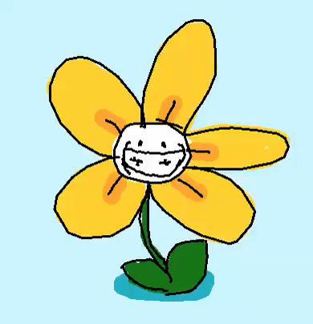

Shake Art Deluxe
backOpen source art tool created in GameMaker Studio 2
playable here
Currently, there are around 500 daily active users, with around 650k total visits across itch.io and Newgrounds.
I'm working on a mobile version in my spare time.
You can find community art examples here

